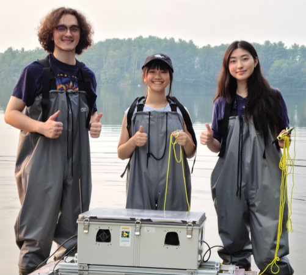
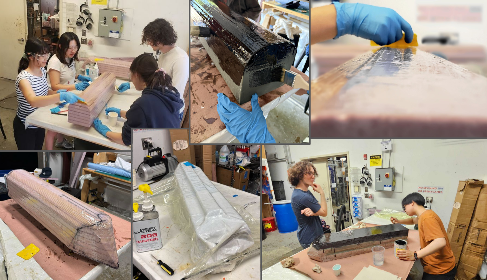
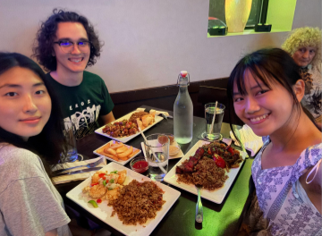

Open-source, modular ASV designed and fabricated to collect limnological data in shallow water
Autonomous Surface Vehicle
01 — OVERVIEW
02 — LEARNING GOALS
- How should a robot be designed to be modular, cost-effective, and power-efficient?
- How do you waterproof equipment?
- How can communication between a vehicle and a ground station be established?
- What interfaces are needed for remote control?
03 — MEDIA



04 — REFLECTION
This was my first introduction to anything related to electrical engineering. I learned how to decide on a strong research question and define actionable steps to answer it. I also gained confidence to not only make design decisions but be responsible for them and defend them to a mentor/ expert.
05 — FOCUS AREA